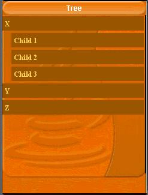

| LWUIT Developer’s Guide |
| C H A P T E R 4 |
Unlike the list that uses the render approach to create exceptionally large lists without much of an overhead, the tree and table are more "stateful" components and use a more conventional approach of nesting components.
To create a table instance a developer needs to first instantiate a model with the data and then create a table as follows:
A table is an editable grid component with variable sizes for its entries. Entries can be editable or not. Just like the list, the table has a model (TableModel) and a default model implementation (DefaultTableModel).
To create a table instance a developer needs to first instantiate a model with the data and then create a table as follows:
TableModel model = new DefaultTableModel(new String[] {
"Col 1", "Col 2", "Col 3"}, new Object[][] {
{"Row 1", "Row A", "Row X"},
{"Row 2", "Row B", "Row Y"},
{"Row 3", "Row C", "Row Z"},
{"Row 4", "Row D", "Row K"},
});
Table table = new Table(model);
|
A cell can be made editable by overriding the isCellEditable method of the model as follows:
public boolean isCellEditable(int row, int col) {
return col != 0;
}
|
The table component contains a few more elaborate features such as the ability to span columns and rows and determine their width or height as percentage of available space. A table can be made to scroll on the X axis as well by setting it to setScrollableX(true), in which case it can "grow" beyond the screen size.
To control the "rendering", the way in which a table creates the cells within it one needs to derive the table itself and override the method createCell as such:
Table table = new Table(model) {
protected Component createCell(Object value, int row, int column, boolean editable) {
// custom code for creating a table cell
...
}
};
|
Notice that components created using createCell will be "live" for the duration of the table's existence and so would be able to receive events and animate. They would also occupy resources for the duration of the table’s existence.
The LWUIT tree is remarkably similar to the table in its design. It however represents a hierarchical view of data such as a filesystem. In that sense a tree is must be provided with a model to represent the underlying data. It is assumed that the underlying data is already "hierarchic" in its nature, such as a corporate structure or a file system.
The tree model exists as an interface for this reason alone. Building it as a class doesn't make sense for the common use case of a domain specific data model. To create a tree model one must implement the two methods in the interface: getChildren and isLeaf.
getChildren is the "heavy lifter" within the interface. It has one argument for the parent node and returns the children of this node as a vector. This method is called with a null argument for its parent representing the "root" of the tree (which isn't displayed). From that point forward all calls to the method will be with objects returned via this method (which are not leaf's).
isLeaf is trivial. It just indicates whether the object within a tree is a leaf node that has no children and can't be expanded.
For example, the Tree would invoke getChildren(null) and receive back the String's "X", "Y' and "Z" within the return vector. It would then call isLeaf("X"), isLeaf("Y"), isLeaf("Z") and render the tree appropriately (as parent nodes or as leafs based on the response to isLeaf).
If the user clicks the "X" node and it is not a leaf the tree expands to contain (in addition to the existing nodes) the response for getChildren("X") as subnodes of "X".
Most of the code below relates to the model. It would be more domain specific for any specific case.
class Node {
Object[] children;
String value;
public Node(String value, Object[] children) {
this.children = children;
this.value = value;
}
public String toString() {
return value;
}
}
TreeModel model = new TreeModel() {
Node[] sillyTree = {
new Node("X", new Node[] {
new Node("Child 1", new Node[] {
}),
new Node("Child 2", new Node[] {
}),
new Node("Child 3", new Node[] {
}),
}),
new Node("Y", new Node[] {
new Node("A", new Node[] {
})
}),
new Node("Z", new Node[] {
new Node("A", new Node[] {
}),
}),
};
public Vector getChildren(Object parent) {
Node n = (Node)parent;
Object[] nodes;
if(parent == null) {
nodes = sillyTree;
} else {
nodes = n.children;
}
Vector v = new Vector();
for(int iter = 0 ; iter < nodes.length ; iter++) {
v.addElement(nodes[iter]);
}
return v;
}
public boolean isLeaf(Object node) {
Node n = (Node)node;
return n.children == null || n.children.length == 0;
}
};
Form treeForm = new Form("Tree");
treeForm.setLayout(new BorderLayout());
treeForm.addComponent(BorderLayout.CENTER, new Tree(model));
treeForm.show();
|
The tree has special static methods to determine icons appropriate for expanded or folded folder and leaf nodes: setFolderOpenIcon(Image), setFolderIcon(Image), setNodeIcon(Image).
Besides that, one can derive the tree component and override the createNodeComponent method to customize the returned component in any desired way.
| LWUIT Developer’s Guide | 12-11-09 |
Copyright © 2009, Sun Microsystems, Inc. All rights reserved.